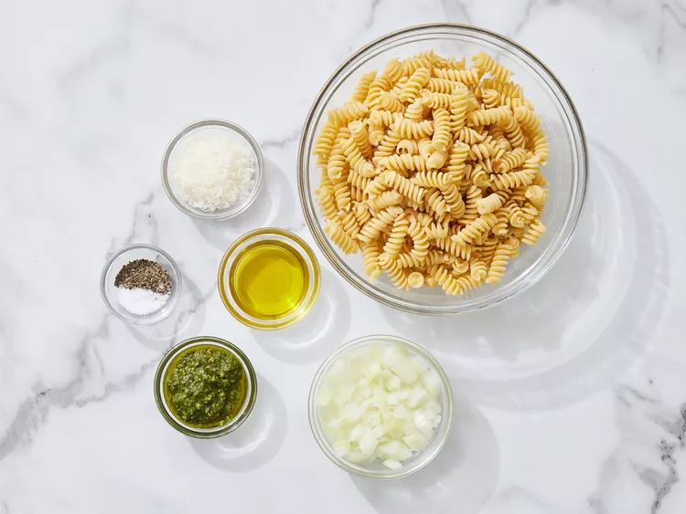
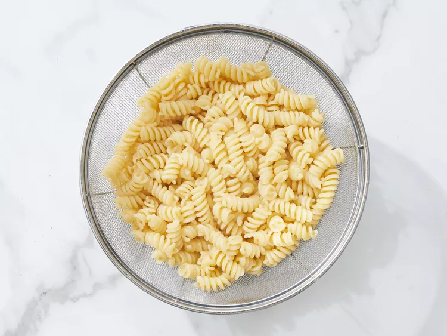
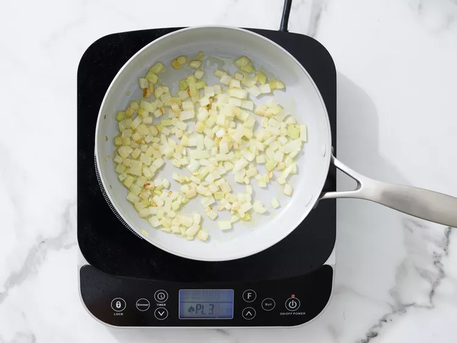
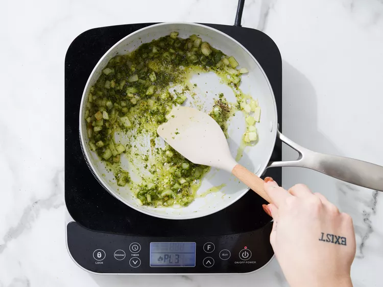
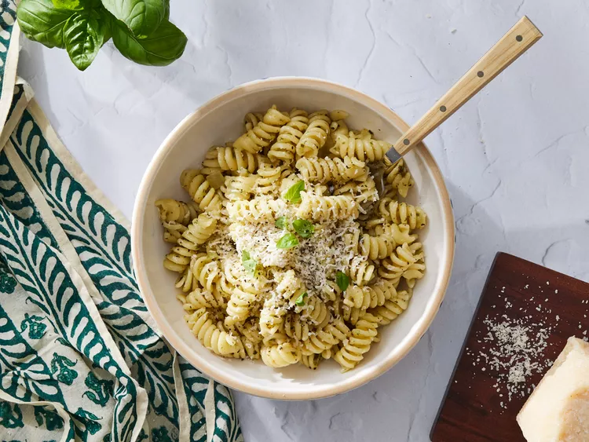

Home
Pesto Pasta

Description
This top-rated pesto pasta recipe, which comes together in just 15 minutes, is the perfect quick and easy weeknight dinner.
Ingredients
These are the ingredients you’ll need to make this easy pesto pasta recipe:
- 1 (16 ounce) package pasta
- 2 tablespoons olive oil
- ½ cup chopped onion
- 2 ½ tablespoons pesto or more to taste
- salt to taste
- freshly ground black pepper to taste
- 2 tablespoons grated Parmesan cheese
Steps for the Making
- Gather all ingredients.

- Fill a large pot with lightly salted water and bring to a rolling boil. Stir in pasta and return to a boil.
Cook pasta uncovered, stirring occasionally, until tender yet firm to the bite, 8 to 10 minutes.
Drain; transfer into a large bowl.

- Meanwhile, heat oil in a skillet over medium-low heat.
Add onion; cook and stir until softened, about 3 minutes.

- Stir in pesto, salt, and black pepper until warmed through.

- Stir pesto mixture into hot pasta; stir in grated cheese to coat.

And voila , enjoy!